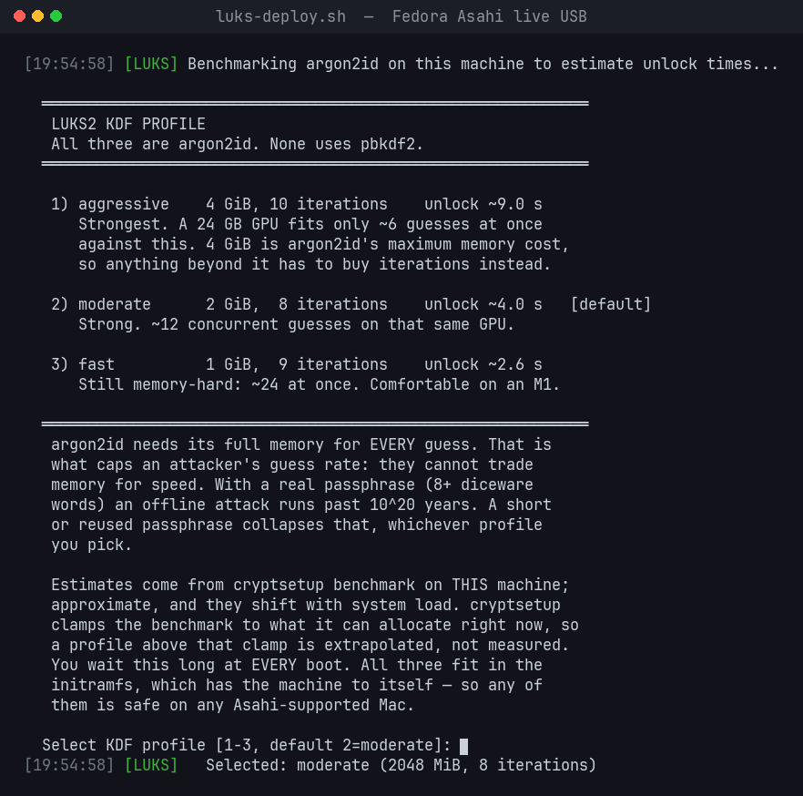

Why Asahi Linux needs this
Every mainstream Fedora installer offers to encrypt the disk. The Asahi installer does not: it installs Fedora Asahi Remix alongside macOS with a plain btrfs root, and adding LUKS has meant doing it yourself afterwards, by hand. On a laptop that is the gap that matters. A lost or stolen MacBook running Asahi gives anyone your home directory, your browser profiles and your SSH keys, with no passphrase in the way.
macOS on the same disk is protected by FileVault. Linux on that disk can be protected too. The difference is that Linux cannot use the Secure Enclave, so the protection has to come from a strong key-derivation function and a good passphrase. AsahiLocker is built around that.
Your options in 2026
There are three practical ways to get an encrypted Asahi system today:
- Do it by hand. David Alger's 2023 guide is the original walkthrough, and Christian Horn's 2026 update covers what has changed since. Both are good reading if you want to understand every command. You boot a Fedora Asahi live USB, encrypt the root partition, then edit the boot configuration and rebuild the initramfs yourself.
- Run a tool that does the same steps for you, with checks. That is what AsahiLocker is. It automates the hand-editing, then verifies the result before you reboot. The rest of this page covers it.
- Wait for the installer. Encryption at install time has been requested of the Asahi installer for years. Until it ships, encrypting means doing it after install, by hand or with a tool.
What AsahiLocker does
- In-place btrfs → LUKS2 conversion. No reinstall, no backup-and-restore round trip, no second disk. Subvolumes, snapshots and the btrfs UUID survive; the partition simply gains an encryption layer.
- Every boot file rewritten, then verified.
crypttab,fstab,/etc/kernel/cmdline, GRUB defaults, all BLS entries, dracut config and all initramfs images, behind a 12-point gate that refuses to let you reboot into a broken system. - Pinned argon2id, never pbkdf2. AES-256-XTS with argon2id at 4, 2 or 1 GiB of
memory per guess, benchmarked on your own machine before you choose. Every profile is stronger
than
cryptsetup's own default on that machine; the script checks that at run time and there is no flag to opt out. - Resumable after any interruption. LUKS2 re-encryption is journaled. Lose power, close the lid, kill the terminal: re-run the script and it finishes the job.
- A
--dry-runthat really is dry. Detection, menus, fstab cross-checks and the KDF benchmark all run, and it prints the exactcryptsetup reencryptcommand it would issue, then stops before changing anything. - Recovery you can actually use. An optional 64-hex-character recovery key in a second keyslot, plus a labelled bundle containing the LUKS header and every changed config.
- Asahi-specific boot guards. One stops a stray
grub2-mkconfigfrom overwriting the ESP stub and dropping you intogrub rescue>. The other clears stale U-Boot EFI entries fromubootefi.var, the file they actually live in.
How the encrypted boot works on Apple Silicon
U-Boot provides the UEFI environment, and GRUB loads the kernel and initramfs from an
unencrypted ext4 /boot. The initramfs reads
rd.luks.uuid from the kernel command line, asks for your passphrase, runs argon2id,
opens the LUKS2 container and mounts root. GRUB never has to unlock anything, which matters
because GRUB 2.12 (current in Fedora 44) has no argon2 support at all.
nvme0n1
p1 APFS iBootSystemContainer
p2 APFS macOS ← untouched
p3 APFS
p4 vfat EFI /boot/efi ← stays plain
p5 ext4 BOOT /boot ← stays plain
p6 btrfs fedora / /home ← becomes LUKS2(btrfs)
p7 APFS RecoveryOSPartition numbers are detected at run time; that is just the common Asahi shape.
Before you start
- An installed Fedora Asahi Remix system with a btrfs root,
a separate ext4
/bootand a vfat EFI partition. That is the standard layout; check withlsblk -f. - A verified backup: one you have actually browsed or restored from. In-place re-encryption rewrites every sector of the root partition.
- Somewhere to run the encryption from. The script will not encrypt the filesystem it is booted from, and has no override for that. Use a Fedora Asahi live USB (a stock Fedora ISO will not boot on Apple Silicon) or, if your Mac will not boot USB, a second minimal Asahi install.
- The charger plugged in, and 15–60 minutes for the encryption itself (60–90 minutes all in).
- A passphrase you have chosen in advance and written down somewhere physically safe. There is no TPM on Apple Silicon: the passphrase, or the optional recovery key, is the only way in.
Step by step
-
Get the kit and build a live USB
On your installed system, clone AsahiLocker and build a Fedora Asahi live USB with leifliddy/asahi-fedora-usb.
build.sherases the target device, so identify the stick carefully.git clone https://github.com/doug445/AsahiLocker.git sudo dnf install arch-install-scripts bubblewrap dosfstools e2fsprogs \ gdisk mkosi openssl pandoc rsync systemd-container git clone https://github.com/leifliddy/asahi-fedora-usb.git cd asahi-fedora-usb lsblk -o NAME,SIZE,TYPE,MODEL,VENDOR # find your USB stick, NOT nvme0n1 sudo su - # build.sh refuses to run under sudo ./build.sh -d /dev/sdX # ← your USB deviceThen copy the AsahiLocker folder onto the stick (
./build.sh mount, copy intomnt_usb/root/,./build.sh umount), so the script is not sitting on the filesystem it is about to encrypt. The live USB's root password isfedora. -
Boot the live USB
Easiest: with the stick plugged in, run this on the installed system, reboot, and pick the new GRUB entry.
sudo grub2-mkconfig -o /boot/grub2/grub.cfgThat exact path, never the ESP one. On Asahi,
/boot/efi/EFI/fedora/grub.cfgmust stay a small chainload stub. Overwriting it drops an encrypted system into a GRUB rescue prompt.Or interrupt U-Boot ("Hit any key to stop autoboot") and boot it from the
=>prompt. If the stick does not show up, runusb startfirst. An unenumerated port is the usual reason a Mac looks like it "cannot boot USB".=> usb start => bootflow scan -l => bootflow select <N> # the usb0 entry, not nvme0 => bootflow boot -
Dry-run it, then encrypt
From the live environment. The dry run shows everything it detected and the exact command it would run, and changes nothing:
sudo /root/AsahiLocker/bin/luks-deploy.sh --dry-run sudo /root/AsahiLocker/bin/luks-deploy.shThe script auto-detects root,
/bootand EFI, cross-checks them against the target's ownfstab, offers a read-onlybtrfs check, benchmarks your Mac, and asks you to pick a KDF profile. It then shows a pre-flight summary. Read it, and typeENCRYPTto begin. Caps Lock is checked for you: an inverted passphrase verifies fine twice and only fails at the boot prompt.Encryption takes 15–60 minutes. Then come eight configuration steps and the 12-point gate. If any check fails it says so and refuses to declare success. Do not reboot until it passes.
-
First encrypted boot
Reboot and remove the USB. The passphrase prompt often scrolls behind boot text. If the screen looks frozen just after GRUB, it is waiting for you: type the passphrase and press Enter. Unlock takes about 2–10 seconds depending on the profile.
-
Finish on the encrypted system
sudo ./AsahiLocker/bin/post-encryption-setup.sh sudo ./AsahiLocker/boot-guards/install.shThis saves a recovery bundle, creates snapper subvolumes on the encrypted volume, restores the boot splash, and installs the two boot guards. Then copy the recovery bundle off the machine. On the drive it protects, it is no use to you.
-
Verify
lsblk -f | grep crypt sudo cryptsetup luksDump /dev/nvme0n1p6 # PBKDF: argon2id, AF hash: sha512 grep rd.luks /boot/loader/entries/*.conf systemctl --failed
Something went wrong? Nothing is lost yet. The
recovery guide
starts with a table: what you see, what state that means, and what to do. It covers an
interrupted encryption, a box that will not boot, SELinux denials, a damaged header and a
grub rescue> prompt.
Choosing an argon2id profile
The key-derivation function runs once at every boot, and once per guess for anyone attacking a copy of your disk. argon2id is memory-hard: every guess needs gigabytes of RAM, and that memory requirement limits how many guesses a GPU or ASIC can run at once. The installer benchmarks your machine and shows an estimate for each profile:
| Profile | Memory | Iterations | Unlock, M2 Max | Work vs cryptsetup default |
|---|---|---|---|---|
aggressive | 4 GiB | 10 | 9.5 s (measured) | 5× |
moderate (default) | 2 GiB | 8 | ~3.8 s | 2× |
fast | 1 GiB | 9 | ~2.1 s | 1.125× |

All three use 4 threads, AES-256-XTS and sha512. All three are safe on any Asahi-supported Mac,
including an 8 GB M1, because the memory only has to be allocatable in the initramfs. You can
re-cost a keyslot later without re-encrypting anything, using bin/luks-tune.sh. The
full reasoning is in
CRYPTO.md,
including how this compares with FileVault's KDF on the same disk.
Manual encryption vs AsahiLocker
| By hand | AsahiLocker | |
|---|---|---|
| Partition selection | You identify root, boot and EFI yourself | Auto-detected, type-checked, cross-checked against the target's fstab |
| KDF parameters | cryptsetup auto-benchmarks: machine-dependent, sha256 | Pinned argon2id + sha512, chosen from a menu benchmarked on your Mac |
| Boot config | Edit crypttab, fstab, cmdline, GRUB defaults and every BLS entry by hand | All rewritten, including every BLS entry and every initramfs |
| Did it work? | You find out at reboot | 12-point gate refuses the reboot until it passes |
| Interrupted run | You debug the header state | Detected and resumed; cryptsetup repair handled |
| SELinux | Relabel yourself, or boot into AVC denials | Relabelled and verified |
| Recovery | Whatever you thought to save | Header backups + a labelled bundle of every changed file |
| Asahi footguns | grub2-mkconfig clobbering the ESP stub; stale U-Boot entries | Boot guards prevent both |
Which Macs
Every M-series Mac that Fedora Asahi Remix boots, laptop or desktop: MacBook Air and Pro, Mac mini, Mac Studio, iMac and the 2023 Mac Pro, across M1, M2 and M3. Nothing in the tooling is model-specific; partitions, sector size and initramfs contents are all read at run time.
- Verified in production: MacBook Pro 16" M1 Pro and MacBook Pro 14" M2 Max, both encrypted in place and unlocked at every boot.
- Reported working: M3 MacBook Air, via the second-install route (Noah Petherbridge's write-up).
- Not claimed: M4. The kernel ships its device trees, but Asahi does not boot it yet.
Desktop owners should read the compatibility notes first: a Bluetooth keyboard cannot type the passphrase at boot.
Risks: read these
- No TPM on Apple Silicon. You type the passphrase at every boot. That is the platform, not a limitation of the tool.
- Forget the passphrase and the data is gone, unless you enrolled the recovery key and can still find it. There is no backdoor.
- Have a verified backup. Re-encryption rewrites every sector of the root partition.
- LUKS protects data at rest, not boot integrity.
/bootis unencrypted and unsigned; an attacker with repeated physical access could tamper with the initramfs. - You cannot brick the Mac. macOS lives on APFS partitions this tool never touches, and Apple Silicon DFU and System Recovery always work.
- This is unofficial. It is not part of, or supported by, Asahi Linux or the Fedora Project. Please do not take problems with it to their trackers; open an AsahiLocker issue instead.
Frequently asked questions
Can I encrypt Fedora Asahi Remix after installing it?
Yes, that is exactly what this is for. The Asahi installer has no encryption option, so without a tool, encrypting means doing it by hand. AsahiLocker converts the existing btrfs root in place, and your installed system, subvolumes, snapshots and btrfs UUID all survive.
Does it touch or wipe macOS?
No. macOS lives on separate APFS partitions that AsahiLocker never reads or writes. Only the btrfs Linux root partition is converted.
Why a passphrase at every boot? Can't it use the Secure Enclave?
There is no TPM on Apple Silicon, and Asahi has no interface to seal a key in the Secure Enclave, so there is nowhere safe to keep an auto-unlock key. That is why the KDF is argon2id and why the passphrase advice is not optional.
Why is /boot left unencrypted?
GRUB must read the kernel and initramfs before anything is unlocked. The root is opened by the
initramfs, not GRUB, so GRUB stays off the unlock path entirely. GRUB 2.12 in Fedora 44 has no
argon2 support. Encrypted /boot is being
researched,
and is not shipped.
What if the encryption is interrupted: power loss, a crash, a closed lid?
Nothing fatal. LUKS2 re-encryption is journaled. Boot the live USB, re-run
luks-deploy.sh, and it detects the interrupted state and resumes, running
cryptsetup repair first if needed. A hard kill mid-reencrypt is part of the
loopback test suite that runs in CI on every push.
Will it work on an M1 with 8 GB of RAM?
Yes, on any profile, including the 4 GiB one. The memory only has to be allocatable in the initramfs, which has the machine to itself. A base M1 unlocks more slowly than an M2 Max at the same settings, which is why the installer benchmarks your Mac.
My Mac won't boot from USB. Am I stuck?
Try usb start at the U-Boot prompt first. If it really will not, install a second
minimal Asahi on the internal disk, encrypt from there, then remove it. The script refuses to
target the system it is running from. See
SECOND-INSTALL.md.
Can I deploy it across several Macs unattended?
Yes. Environment variables pin the KDF, partitions and passphrase file so no menu appears. Read FLEET.md first: imaging several boxes from one source creates a real UUID-uniqueness problem.
How do I know it is safe to run?
Don't take it on trust. Run --dry-run and read what it would do;
INTERNALS.md
documents every file it changes and every gate check. The loopback suite runs the exact encrypt,
resume and recovery-key sequence against a throwaway loop device on every push. The audits so
far, and who did them, are recorded in the
README.
I'm not on Apple Silicon. Is there a version for my PC?
Yes: LinuxLocker applies the same in-place LUKS2 approach to other distros and filesystems, handles systemd-boot as well as GRUB, and re-signs Unified Kernel Images for Secure Boot.
Credits and further reading
- Fedora Asahi Remix on Apple Silicon with LUKS encryption, David Alger (2023): the manual method, and where most people started.
- Fedora Asahi Remix with LUKS encryption in 2026, Christian Horn: the manual method, updated.
- Asahi Linux with LUKS Encryption, Noah Petherbridge (September 2026): a real end-to-end AsahiLocker run on an M3 MacBook Air. AsahiLocker's second-install route came out of it.
- asahi-fedora-usb, Leif Liddy: the live USB builder this guide uses.
- Asahi Linux: the project that makes any of this possible.